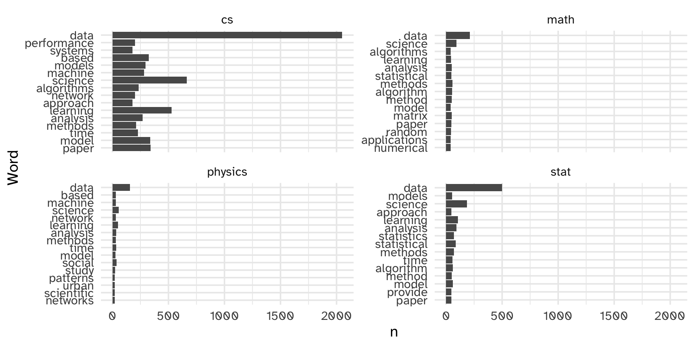
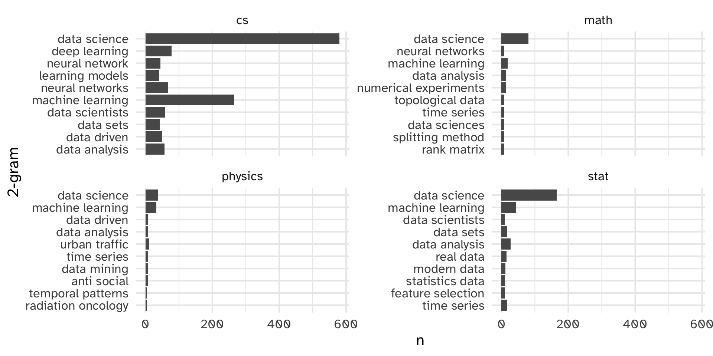
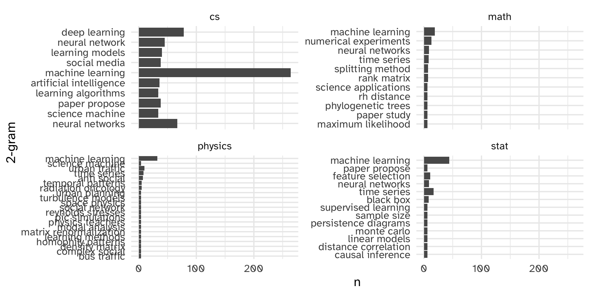
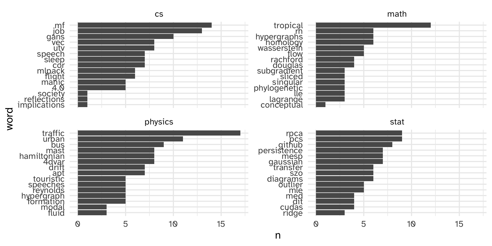

Text Analysis
Day 14
Carleton College
Stat 220 - Winter 2025
Today
- Midterm check-in
- Questions about lab quiz, project, etc.
- Regex
- Intro to Text Analysis
Midterm check-in
Things that are going well:
- Like getting immediate practice in class
- Learning a lot on homeworks
- Becoming more efficient/neater/cleaner/cleverer in R
- Building a presence on GitHub
- Working with peers
- Building confidence
-
ggplotskills - Enjoying coming to class (demos, lectures, group work, activities)
Overview of responses
[graphs from google]
Suggested changes:
- Cheat sheets on quizzes ✅
- Post solutions to in-class exercises ✅
- More time for in-class lab quizzes ﹖
My takeaways
- More direction on portfolio projects with clear rubrics
- Limit “tricky” homework problems each assignment
- Do more live coding/demos in class
Suggested changes:
- Lectures aren’t helpful and we should dedicate more time to in-class coding practice
- Please spend more time explaining commands and doing demos before we do in-class coding practice
- We should have more time doing “your turn” activities so we have time to talk through them in groups
- We should condense the time spent on “your turn” activities so we can get through everything on the slides and have more demos
- The homeworks stress me out because they’re too long; fewer problems would help
- The homeworks stress me out because they sometimes contain less than 10 problems. Maybe they should be longer?
Concerns about grading scheme:
- Lots of frustration about lack of partial credit on homework
- Still getting comfy with revisions on projects
- “I worked really hard and made a couple small mistakes and had to do a revision”
- “Bar” for homework/portfolio projects feels high
- Time pressures on lab quizzes
Goals of the grading scheme:
Homework
- Can you apply techniques from class/readings in new settings?
- Can you read R documentation to figure out new things?
- Can you work through some tricky ideas without a time limit?
Portfolio Projects
- Can you answer less-structured questions with data?
- Are you learning how to “scope” a data analysis?
- Can you put together a polished final product?
Lab Quizzes
- Can you repeat things we have done in class and on homework with limited access to resources?
- Are you learning how to answer questions with data quickly?
- Are you developing proficiency with R?
Revision is a key part of this course design!
Questions about lab quiz, projects?
Regex
Example
Suppose we wish to anonymize phone numbers in survey results
[1] "Home: 507-645-5489" "Cell: 219.917.9871"
[3] "My work phone is 507-202-2332" "I don't have a phone" Visualizing matches
The helper function str_view() finds regex matches
. match any character
Find a “-” and any (.) character that follows
[] match any occurence
Find any numbers between 0 and 9
[] match any occurence
Find any numbers between 2 and 7
Your turn:
Detect either “.” or “-” in the info vector.
02:00
Special patterns
There are a number of special patterns that match more than one character
-
\\d- digit -
\\s- white space -
\\w- word -
\\t- tab -
\\n- newline
Caution!
[^] match any occurence except
ANYTHING BUT numbers between 2 and 7
Anchors
Anchors look for matches at the start ^ or end $
[1] │ Home: 507-645-5489
[2] │ Cell: 219.917.9871
[3] │ My work phone is 507-202-2332
[4] │ I don't have a phoneUse regex in str_detect, str_sub, etc:
[1] │ Home: 507-645-5489
[2] │ Cell: 219.917.9871
[3] │ My work phone is 507-202-2332
[4] │ I don't have a phoneYour turn
Fill in the code to determine how many baby names in 2015 ended with a vowel.
Use a regular expression to specify the pattern.
03:00
Alternative patterns
| allows you to match one or more alternative patterns
“Fixing” the order of operations
Why are these different?
Repetition
You can search for a pattern followed by the number of matches
Your turn:
Fill in the code to determine how many baby names in 2015 started or ended with a vowel.
Use a regular expression to specify the pattern.
02:00
Duplicating groups
Use escaped numbers (\\1, \\2, etc) to repeat a group based on position
Which numbers have the same 1st and 3rd digits?
Your turn (if time)
Try the regular expressions from 13-strings-regex.rmd
Intro to Text Analysis
Text Analysis
Up to this point, we’ve been thinking of string data as a column in our dataset:
- Names
- Phone numbers
- Addresses
- Course titles
- etc.
which are all relatively short and structured. We can extract meaning from them using relatively simple functions.
Sometimes, text data is more unstructured
library(mdsr)
DataSciencePapers <- DataSciencePapers |>
mutate(
submitted = lubridate::ymd_hms(submitted),
updated = lubridate::ymd_hms(updated)
)
glimpse(DataSciencePapers)Rows: 1,089
Columns: 15
$ id <chr> "astro-ph/0701361v1", "0901.2805v1", "0901.3118v2", "…
$ submitted <dttm> 2007-01-12 03:28:11, 2009-01-19 10:38:33, 2009-01-20…
$ updated <dttm> 2007-01-12 03:28:11, 2009-01-19 10:38:33, 2009-01-24…
$ title <chr> "How to Make the Dream Come True: The Astronomers' Da…
$ abstract <chr> " Astronomy is one of the most data-intensive of the…
$ authors <chr> "Ray P Norris", "Heinz Andernach", "O. V. Verkhodanov…
$ affiliations <chr> "", "", "Special Astrophysical Observatory, Nizhnij A…
$ link_abstract <chr> "http://arxiv.org/abs/astro-ph/0701361v1", "http://ar…
$ link_pdf <chr> "http://arxiv.org/pdf/astro-ph/0701361v1", "http://ar…
$ link_doi <chr> "", "http://dx.doi.org/10.2481/dsj.8.41", "http://dx.…
$ comment <chr> "Submitted to Data Science Journal Presented at CODAT…
$ journal_ref <chr> "", "", "", "", "EPJ Data Science, 1:9, 2012", "", "E…
$ doi <chr> "", "10.2481/dsj.8.41", "10.2481/dsj.8.34", "", "10.1…
$ primary_category <chr> "astro-ph", "astro-ph.IM", "astro-ph.IM", "astro-ph.I…
$ categories <chr> "astro-ph", "astro-ph.IM|astro-ph.CO", "astro-ph.IM|a…Note: may need to install mdsr, tidytext and stopwords packages
[1] " The R programming language is built on an ecosystem of packages, some that\nallow analysts to accomplish the same tasks. For example, there are at least\ntwo clear workflows for creating data visualizations in R: using the base\ngraphics package (referred to as \"base R\") and the ggplot2 add-on package based\non the grammar of graphics. Here we perform an empirical study of the quality\nof scientific graphics produced by beginning R users. In our experiment,\nlearners taking a data science course on the Coursera platform were randomized\nto complete identical plotting exercises in either the base R or the ggplot2\nsystem. Learners were then asked to evaluate their peers in terms of visual\ncharacteristics key to scientific cognition. We observed that graphics created\nwith the two systems rated similarly on many characteristics. However, ggplot2\ngraphics were generally judged to be more visually pleasing and, in the case of\nfaceted scientific plots, easier to understand. Our results suggest that while\nboth graphic systems are useful in the hands of beginning users, ggplot2's\nnatural faceting system may be easier to use by beginning users for displaying\nmore complex relationships.\n"
Some notation
document: an observation of text data (in this case, an abstract)
corpus: collection of many documents
token: a unit of analysis within the document (typically a word, but could be a sentence or a line or a pair of words, etc.)
Text as tidy data
-
tokenize each document
- Each row in the dataset is a token
- Remove stopwords
- Words like “the” and “is” typically aren’t interesting
- Makes the dataset smaller and easier to work with
- Count the tokens
- (optional) fancy count the tokens
- Standardize based on total number of tokens
- How common is a token relative to other documents
- How common are “good words” or “bad words”
- How common are pairs of words
unnest_tokens()
-
tbl: our data -
output: what should the output column be called? -
input: what column do we tokenize? -
token: default is “word” but can also be “ngrams”, “sentences”, “lines”, “pargraphs”, etc. -
to_lower: should tokens be converted to lowercase
Tokenize
library(tidytext)
DataSciencePapers |>
unnest_tokens(output = word, input = abstract) |>
select(id, word)# A tibble: 194,983 × 2
id word
<chr> <chr>
1 astro-ph/0701361v1 astronomy
2 astro-ph/0701361v1 is
3 astro-ph/0701361v1 one
4 astro-ph/0701361v1 of
5 astro-ph/0701361v1 the
6 astro-ph/0701361v1 most
7 astro-ph/0701361v1 data
8 astro-ph/0701361v1 intensive
9 astro-ph/0701361v1 of
10 astro-ph/0701361v1 the
# ℹ 194,973 more rowsRemove stopwords
DataSciencePapers |>
unnest_tokens(word, abstract) |>
anti_join(get_stopwords(source = "stopwords-iso"), by = "word") |>
select(id, word)# A tibble: 98,780 × 2
id word
<chr> <chr>
1 astro-ph/0701361v1 astronomy
2 astro-ph/0701361v1 data
3 astro-ph/0701361v1 intensive
4 astro-ph/0701361v1 sciences
5 astro-ph/0701361v1 data
6 astro-ph/0701361v1 technology
7 astro-ph/0701361v1 accelerating
8 astro-ph/0701361v1 quality
9 astro-ph/0701361v1 effectiveness
10 astro-ph/0701361v1 rate
# ℹ 98,770 more rowsAside: clean the categories
Aside: clean the categories
# A tibble: 99 × 2
broad specific
<chr> <chr>
1 astro-ph <NA>
2 astro-ph IM
3 cs SI
4 cs CL
5 physics soc-ph
6 physics geo-ph
7 q-bio PE
8 stat AP
9 cs SE
10 physics ed-ph
# ℹ 89 more rowsCount the tokens
DataSciencePapers |>
unnest_tokens(word, abstract) |>
anti_join(get_stopwords(source = "stopwords-iso"), by = "word") %>%
group_by(broad) %>%
count(word) %>%
slice_max(n, n = 15) %>%
filter(broad %in% c("physics", "cs", "stat", "math")) %>%
ggplot(aes(x = n, y = fct_reorder(word, n))) +
geom_col() +
facet_wrap(~broad, scales = "free_y") +
labs(
y = "Word"
)Count the tokens

Make it ~ fancy ~: n-grams
Make it ~ fancy ~: n-grams
arxiv_papers |>
unnest_tokens(bigram, abstract_clean, token = "ngrams", n = 2) |>
group_by(broad) %>%
count(bigram) %>%
slice_max(n, n = 10) %>%
filter(broad %in% c("physics", "cs", "stat", "math")) %>%
ggplot(aes(x = n, y = fct_reorder(bigram, n))) +
geom_col() +
facet_wrap(~broad, scales = "free_y") +
labs(
y = "2-gram"
)Make it ~ fancy ~: n-grams

What if we remove bigrams that include “data”?
arxiv_papers |>
unnest_tokens(bigram, abstract_clean, token = "ngrams", n = 2) |>
group_by(broad) %>%
count(bigram) %>%
filter(str_detect(bigram, "data", negate = TRUE)) %>%
slice_max(n, n = 10) %>%
filter( n > 1) %>%
filter(broad %in% c("physics", "cs", "stat", "math")) %>%
ggplot(aes(x = n, y = fct_reorder(bigram, n))) +
geom_col() +
facet_wrap(~broad, scales = "free_y") +
labs(
y = "2-gram"
)What if we remove bigrams that include “data”?

Make it ~ fancy ~: tf-idf
Idea: how common are certain tokens relative to the rest of the documents in the corpus?
tf(t,d) = “term frequency”: what proportion of document d is term t?
idf = “inverse document frequency”: log-scaled inverse fraction of documents that contain the term
\[\text{idf} = \log \frac{\text{number of documents}}{\text{number of documents containing term t}}\]
\[\text{tf-df(t, d)} = \frac{\text{tf(t, d)}}{\text{idf(t)}}\]
highest tf-idf’s are used a lot within an abstract, and rarely in other abstracts
arxiv_papers %>%
unnest_tokens(word, abstract_clean) |>
count(id, word) |>
bind_tf_idf(word, id, n) |>
group_by(word) |>
mutate(total_n = sum(n)) |>
ungroup() |>
arrange(desc(tf_idf)) # A tibble: 74,165 × 7
id word n tf idf tf_idf total_n
<chr> <chr> <int> <dbl> <dbl> <dbl> <int>
1 2007.12681v1 fintech 8 0.154 6.99 1.08 8
2 1707.07029v1 reflections 1 0.167 6.30 1.05 2
3 1507.00333v3 mf 14 0.14 6.99 0.979 14
4 1906.04572v1 utv 8 0.116 6.99 0.811 8
5 2006.00371v1 ridge 3 0.125 6.30 0.787 4
6 1907.09387v1 4.0 5 0.102 6.99 0.714 5
7 1906.04572v1 cor 7 0.101 6.99 0.709 7
8 2001.06937v1 gans 10 0.122 5.61 0.684 13
9 1606.06769v1 traffic 17 0.17 4.00 0.680 63
10 1810.10989v3 speech 7 0.130 5.20 0.674 15
# ℹ 74,155 more rowsarxiv_papers %>%
unnest_tokens(word, abstract_clean) |>
count(id, word) |>
bind_tf_idf(word, id, n) |>
left_join(arxiv_papers |>
select(id, broad)) |>
group_by(broad) %>%
slice_max(tf_idf, n = 15) %>%
filter(broad %in% c("physics", "cs", "stat", "math")) %>%
ggplot(aes(x = n, y = fct_reorder(word, n))) +
geom_col() +
facet_wrap(~broad, scales = "free_y") +
labs(
y = "word"
)
Your turn:
Try to learn something new from the arXiv data, using stringr or tidytext tools
- Try a trigram analysis
- In the bigram analysis, we treated “data” as a stopword. Try customizing your own stopwords.
- Try a text analysis of the arXiv titles rather than the abstracts.